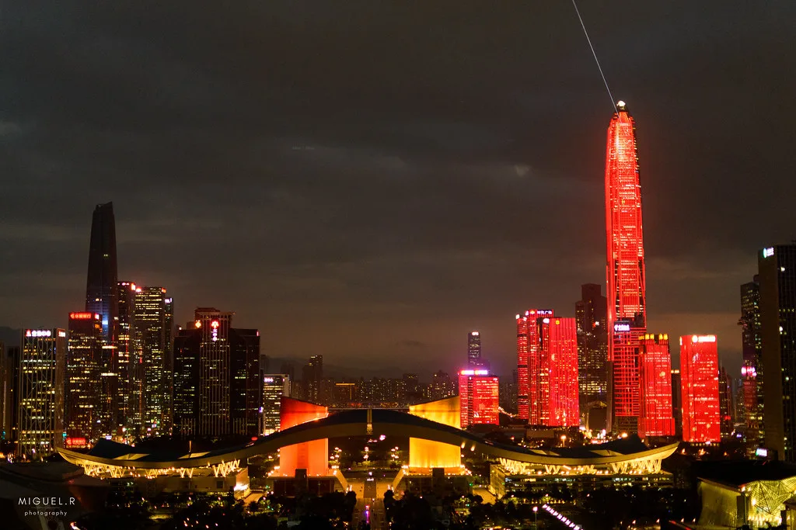
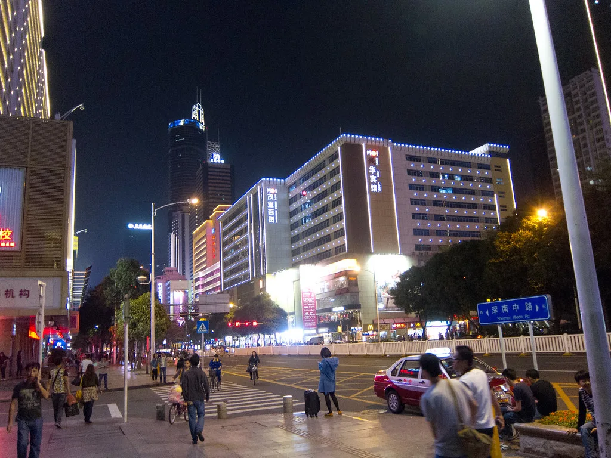

이재명 대통령이 18일(현지시간) 아시아태평양경제협력체(APEC) 정상회의 개최지인 중국 광둥성 선전에서 시진핑 국가주석과 정상회담을 가졌다. 두 정상이 마주 앉는 것은 지난해 11월 경주 APEC 계기 회담과 올해 1월 베이징 국빈 방문에 이어 이번이 세 번째다. 1년 남짓한 기간에 세 차례 회담이 이어지면서 한동안 냉랭했던 한중 관계가 본격적인 회복 궤도에 들어섰다는 평가가 나온다.
이 대통령은 앞서 필리핀 마닐라에서 아세안 관련 정상회의 일정을 마친 뒤 17일 밤 선전에 도착했다. 청와대는 서면 브리핑을 통해 이번 회담에서 양 정상이 그간의 관계 발전 성과를 점검하고, 교역과 투자 등 호혜적인 경제협력을 넓히는 방안을 논의한다고 밝혔다. 인적 교류 활성화와 문화·콘텐츠 분야 협력, 한반도의 평화와 안정 같은 공동 관심사도 의제에 올랐다.

관심을 모으는 대목은 문화·콘텐츠 협력이다. 중국은 2016년 사드 배치 이후 한국 대중문화 콘텐츠의 유통과 단체관광을 사실상 제한해 왔는데, 이른바 한한령으로 불리는 이 조치는 공식적으로 인정된 적이 없어 해법 마련도 쉽지 않았다. 정부는 정상 간 신뢰를 바탕으로 공연·드라마·게임 등 콘텐츠 교류의 문을 단계적으로 넓히는 계기를 만들고 싶다는 입장이다. 콘텐츠 업계에서도 중국 시장 재진입 여부가 향후 수출 실적을 좌우할 수 있는 만큼 이번 회담 결과를 예의 주시하고 있다.
경제 분야에서는 한중 자유무역협정(FTA) 서비스·투자 분야 후속 협상이 진전될지가 주목된다. 양국은 2015년 FTA 발효 이후 상품 교역 중심으로 협력해 왔지만, 서비스와 투자 시장 개방을 다루는 2단계 협상은 오랫동안 큰 진척을 보지 못했다. 공급망 안정과 핵심 광물 협력 역시 국내 산업계가 정부에 꾸준히 요청해 온 과제다. 중국은 한국의 최대 교역 상대국 가운데 하나인 만큼, 반도체와 배터리 소재 등에서 안정적인 협력 틀을 마련하는 것이 국내 제조업 경쟁력과도 직결된다는 지적이 많다.
한반도 문제도 중요한 축이다. 위성락 국가안보실장은 순방 전 브리핑에서 남북·북미 대화 재개와 한반도의 항구적 평화를 위한 정부 노력에 대해 역내 국가들의 지지와 건설적 기여를 당부하겠다고 밝힌 바 있다. 북한과 가장 긴밀한 관계를 유지하는 중국이 대화 재개 과정에서 어떤 역할을 할 수 있을지가 회담의 관전 포인트로 꼽혔다. 특히 미국 측이 북미 정상 간 만남 가능성을 여러 차례 언급해 온 만큼, 중국의 중재 의지를 확인하는 자리가 될 수 있다는 관측도 나왔다.

이번 회담은 미국과 중국, 러시아 정상이 APEC을 계기로 선전에서 3자 회동을 예고한 가운데 열려 더욱 눈길을 끌었다. 강대국 간 대화 구도가 빠르게 바뀌는 상황에서 한국이 한반도 현안에 대한 입장을 충분히 반영하도록 외교 공간을 확보하는 것이 과제로 떠올랐다. 한미 정상회담은 이날까지 개최 여부가 불투명한 것으로 전해졌다.
청와대는 내년 한중 수교 35주년을 앞두고 이번 만남이 전략적 협력 동반자 관계를 한 단계 발전시키는 계기가 되기를 기대하고 있다. 구체적인 합의 내용과 후속 조치는 회담 종료 후 공식 발표를 통해 확인될 전망이다. 이 대통령은 19일 APEC 정상회의 본회의에 참석해 역내 경제 협력과 공급망 문제 등에 대한 한국의 입장을 밝힐 예정이다.